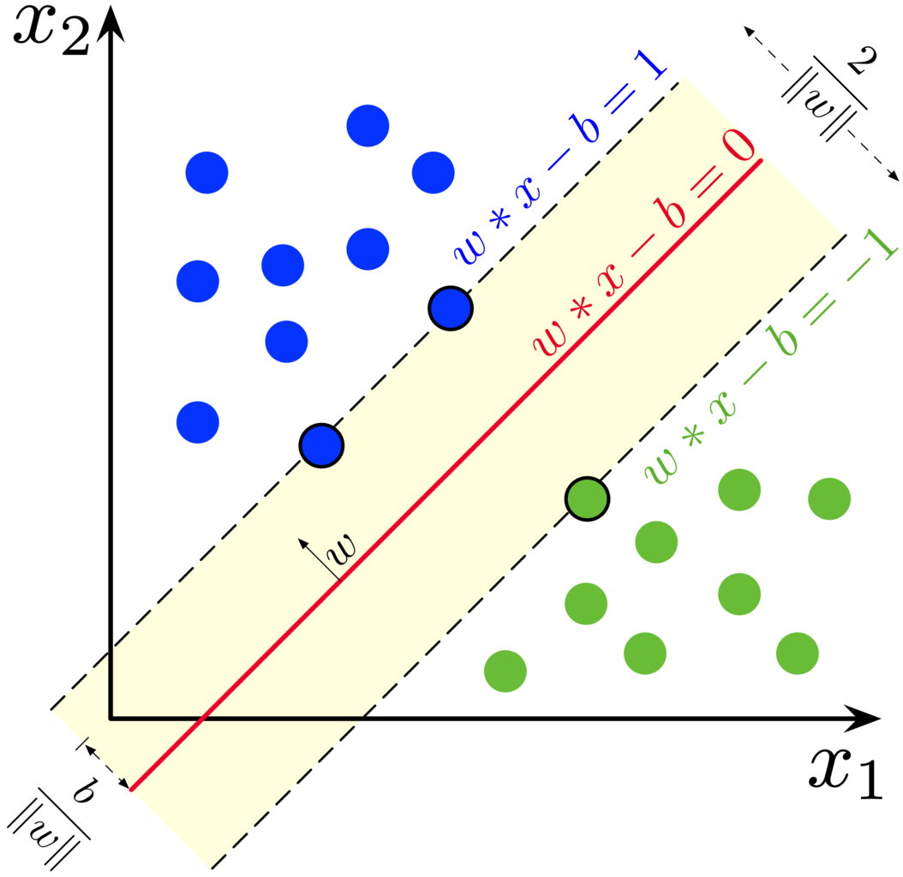
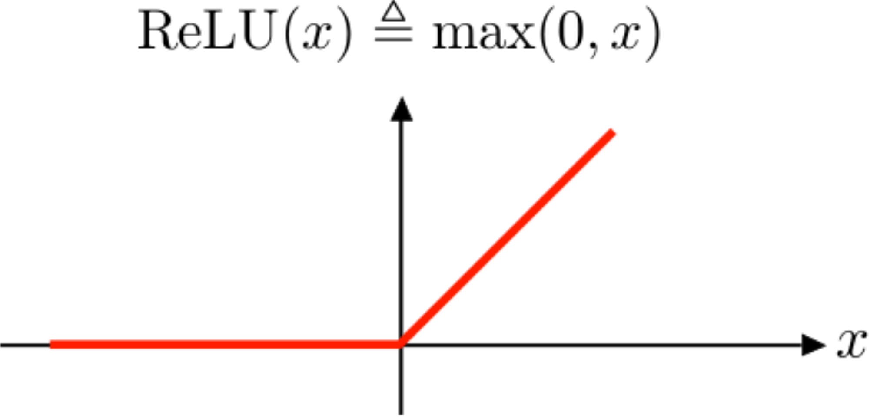

1. Computer vision¶
In computer vision, a machine learning model uses the image and pattern mappings to find solutions.
The model analyses the image as an array of pixels.
This has applications in many monitoring, inspection, and surveillance tasks.
1.1. Computer vision applications¶
Classification of the content in an image.
Detecting different objects in an image.
Detecting and locating multiple objects in an image.
Instance segmentation, where objects are located at the pixel level also within a cluster of similar objects, drawing the boundaries for each of them.
The automatic analysis/annotation of videos and images.
1.2. Machine learning tools¶
Some of the key technologies in computer vision are:
Support vector machines
Neural networks
Probabilistic graphical models.
1.2.1. Support vector machines¶
The Support Vector Machine (SVM) was previously one of the most popular algorithms in modern machine learning. It often provides very impressive classification performance on reasonably sized datasets. However, SVMs have difficulties with large datasets since the computations don’t scale well with the number of training examples. This poor performance with large datasets hinders somewhat their success in computer vision and is the reason why neural networks have partly replaced SVMs. 
1.2.2. Neural networks¶
Neural networks are a large class of models and learning methods. The most traditional is the single hidden layer back-propagation network or a single layer perceptron.

Despite the hype surrounding neural networks, they are no different from other nonlinear statistical models. They are just networks of neurons that calculate linear combinations of input values and input these linear combinations to nonlinear activation functions. The result is a powerful learning method, with widespread applications in many fields. The most successful neural network architectures in computer vision are convolutional neural networks that are introduced in more detail below.
1.2.3. Probabilistic graphical models¶
A structured probabilistic model is a way of describing a probability distribution, using a graph to describe which random variables in the probability distribution interact with each other directly.
1.3. Key Machine learning libraries¶
1.3.1. OpenCV¶
The description from www.opencv.org: “OpenCV (Open Source Computer Vision Library) is an open-source computer vision and machine learning software library. OpenCV was built to provide a common infrastructure for computer vision applications and to accelerate the use of machine perception in commercial products. Being a BSD-licensed product, OpenCV makes it easy for businesses to utilize and modify the code.
The library has more than 2500 optimized algorithms, which includes a comprehensive set of both classic and state-of-the-art computer vision and machine learning algorithms. These algorithms can be used to detect and recognize faces, identify objects, classify human actions in videos, track camera movements, track moving objects, extract 3D models of objects, produce 3D point clouds from stereo cameras, stitch images together to produce a high-resolution image of an entire scene, find similar images from an image database, remove red eyes from images taken using flash, follow eye movements, recognize scenery and establish markers to overlay it with augmented reality, etc. OpenCV has more than 47 thousand people of user community and the estimated number of downloads exceeding 18 million. The library is used extensively in companies, research groups and by governmental bodies.”
1.3.2. Accord.net¶
The description from www.accord-framework.net: “Accord.NET is a framework for scientific computing in .NET. The framework is comprised of multiple libraries encompassing a wide range of scientific computing applications, such as statistical data processing, machine learning, pattern recognition, including but not limited to, computer vision and computer audition. The framework offers a large number of probability distributions, hypothesis tests, kernel functions and support for most popular performance measurements techniques.”
1.3.3. Tensorflow¶
Tensorflow is a general-purpose machine learning library developed by Google and extremely popular among machine learning practitioners at the moment. It has very advanced deep learning libraries for computer vision, image processing and classification. However, it has somewhat awkward syntax, especially for those accustomed to the Python-style syntax, which has caused competing libraries, like PyTorch, to gain popularity recently. Tensorflow is a lower-level library than for example OpenCV, and f you want to perform image processing with TensorFlow, you’d have to understand what machine and deep Learning is, write your own algorithms, and then go forward from there.
1.3.4. CUDA¶
CUDA is a library for parallel computing developed by Nvidia. Its’ purpose is to utilize the power GPUs for machine learning calculations. The CUDA Toolkit includes the NVIDIA Performance Primitives library, which is a collection of signal, image, and video processing functions. If you have large images to process, that are GPU intensive, you can choose to use CUDA. CUDA is a low-level library.
1.3.5. SimpleCV¶
The description from www.simplecv.org: “SimpleCV is an open-source framework for building computer vision applications. With it, you get access to several high-powered computer vision libraries such as OpenCV – without having to first learn about bit depths, file formats, colour spaces, buffer management, eigenvalues, or matrix versus bitmap storage. This is computer vision made easy.”
1.3.6. Scipy¶
SciPy is a Python-based ecosystem of open-source software for mathematics, science, and engineering that includes few of the most popular Python libraries, live Numpy, Matplotlib, IPython, Sympy and Pandas. Although Scipy is not specifically designed for computer vision, it is used quite often for that purpose. With Numpy’s efficient array manipulations, the ecosystem is easily powerful enough to perform image processing.
1.4. Computer vision in different fields¶
Computer vision is important in fields such as meteorology, agriculture, biological sciences, face recognition, human activity measurement, medical sciences, professional sports and traffic monitoring.
1.5. Convolutional neural networks¶
In the computer vision context, the input for convolutional neural networks (CNN) is a multi-channeled image (instead of a vector that is commonly used in standard feed-forward neural networks), i.e. a 3D-tensor (several channels of 2D images).
The network consists of convolution layers and pooling layers.
The convolution layers filter feature maps (channels in the original image) with small filters that are slid through the maps.
Convolution = filtering –> A dot product between the filter and a portion of the image (plus bias).
The filter is slid through an image (every channel of the image).
As a result, we get a slightly smaller “image” of dot products.
The convolution layer is the main building block of CNNs
The fundamental difference between a densely connected layer and a convolution layer is that dense layers learn global structures in their input feature maps (channels), whereas convolution layers learn local patterns. This is useful in computer vision problems because, in the case of images, these local patterns can be located anywhere in the image. Moreover, CNNs have usually chains of convolutional layers, which causes these learned patterns to become more “complex” the deeper we are in the CNN. The first convolutional layers learn arcs, lines etc. and later layers connect these to circles and other more complex structures (, of course depending on the computer vision task at hand). A first convolutional layer learns small and simple patterns, a second convolutional layer learns patterns that are constructed from the patterns of the first layer, and so on.
These characteristic give CNNs interesting properties. For example, the learned patterns are translation invariant. A certain pattern learned at a certain location can be recognised anywhere in an image, a key property for computer vision tasks. A traditional feed-forward network would have to learn a certain pattern anew for every location in an image. This makes CNNs data-efficient; they need fewer training samples to learn representations that have generalisation power.
1.5.1. ReLUs¶
CNNs usually use rectified linear units (ReLU) as activation functions to add nonlinearity, just like traditional densely connected neural networks. Without a non-linear activation function, the network would be linear (no matter how many layers, a linear combination of linear combinations is still a linear combination).

1.5.2. Pooling layers¶
Its function is to progressively reduce the spatial size of the representation to reduce the number of parameters and computation in the network. Pooling layer operates on each feature map independently.
The most common approach used in pooling is max pooling.

1.5.3. Feature maps¶
As I mentioned, convolutional layers operate over 3D tensors, called feature maps, with two spatial axes (2D image) as well as a depth axis (also called the channels axis). For a usual RGB image, the dimension of the depth axis is 3 (red, green and blue). For a black-and-white picture, there is no depth axis, but one feature map representing different levels of grey (or the third dimension has unit length). The convolution operation extracts patches from its input feature map and applies the same transformation to all of these patches, producing an output feature map. This output feature map is still a 3D tensor: it has a width and a height that depend on the convolutional filter used. The depth is a parameter of the model, which increases when moving from left to right in a CNN. However, this does not increase the number of parameters in a model, because CNNs usually use pooling layers to decrease the size of feature maps. The channels no longer stand for specific colours as in an RGB input; rather, they stand for filters. Filters encode specific aspects of the input data: at a high level, a single filter could encode the concept “presence of a face in the input” for instance.

1.5.4. Best pretrained models¶
It is often beneficial to use pre-trained networks in practical computer vision applications. Pretrained networks have their parameters trained with very large datasets using HPC capabilities. A very common dataset is Imagenet that has over 14 million images (www.image-net.org). Below are some popular pre-trained networks that have proven to be very efficient, according to the ImageNet Large Scale Visual Recognition Challenge -winners.
ImageNet Large Scale Visual Recognition Challenge -winners
Previous winners, with shallow neural networks, achieved around 25 % error rate. The examples below are all deep convolutional neural networks.
2012 - Alexnet - 8 layers - 16 % error rate - a much deeper structure and utilised GPUs during training
2013 - ZF-net - 8 layers - 12 % error rate
2014 - VGG - 19 layers - 7.3 % error rate
2014 - GoogleNet - 22 layers - 6.7 % error rate
Human error rate around 5 %
2015 - ResNet - 152 layers - 3.6 % error rate - innovation: a residual learning framework that improves the training of very deep networks
2016 - Ensemble of previous models - 3.0 % error rate
2017 - SENet - 2.25 % error rate